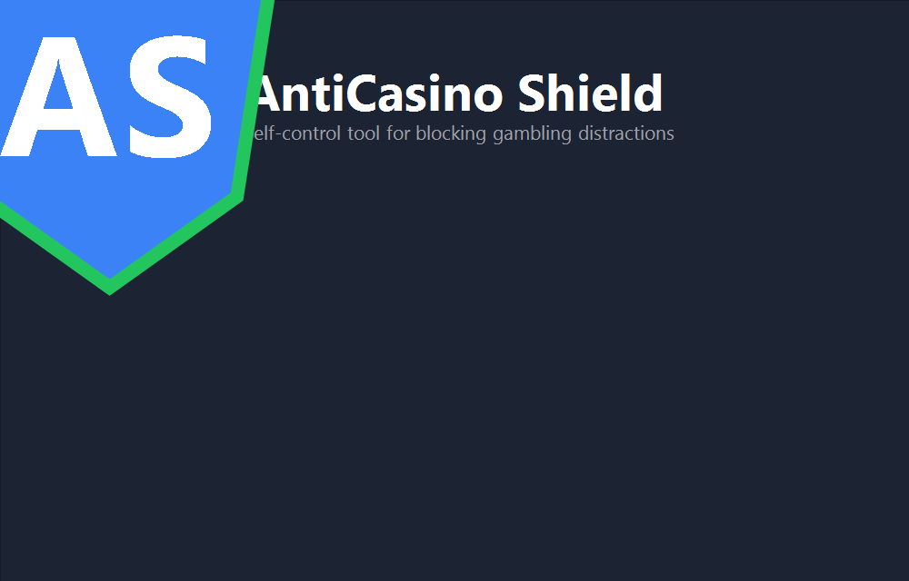
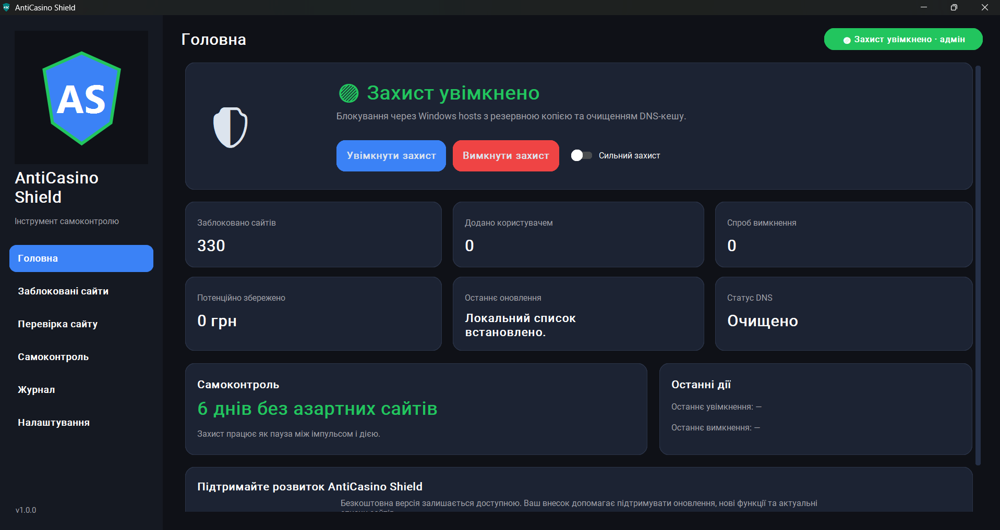
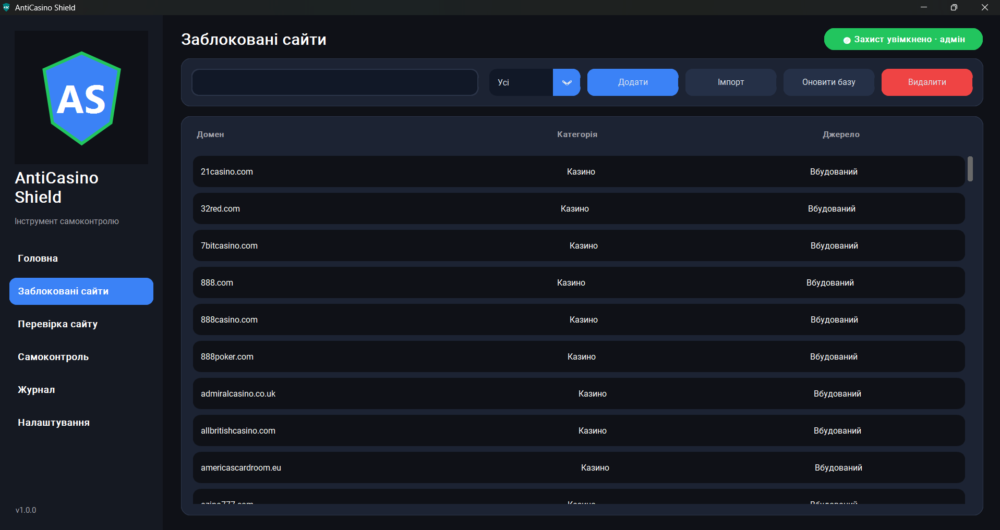
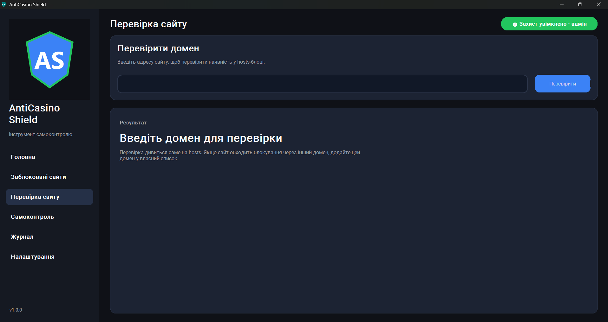
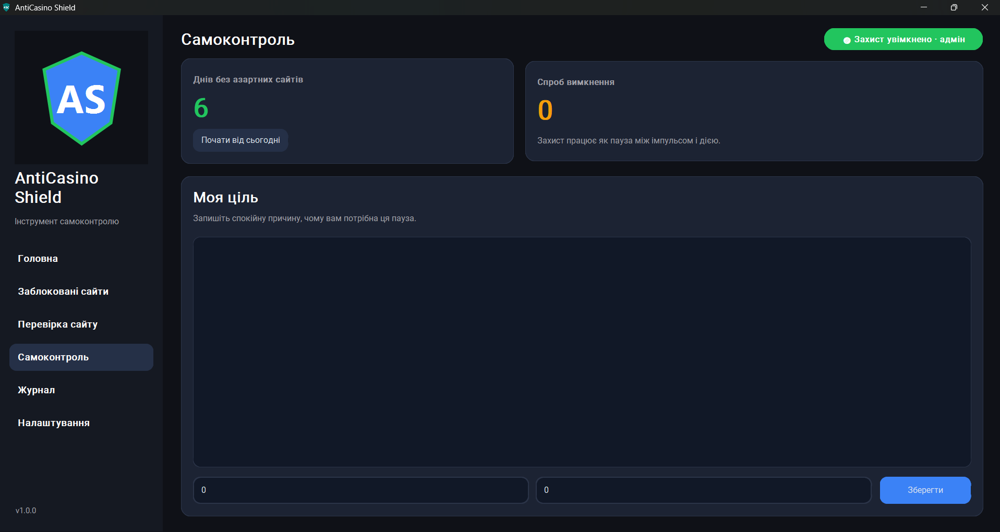
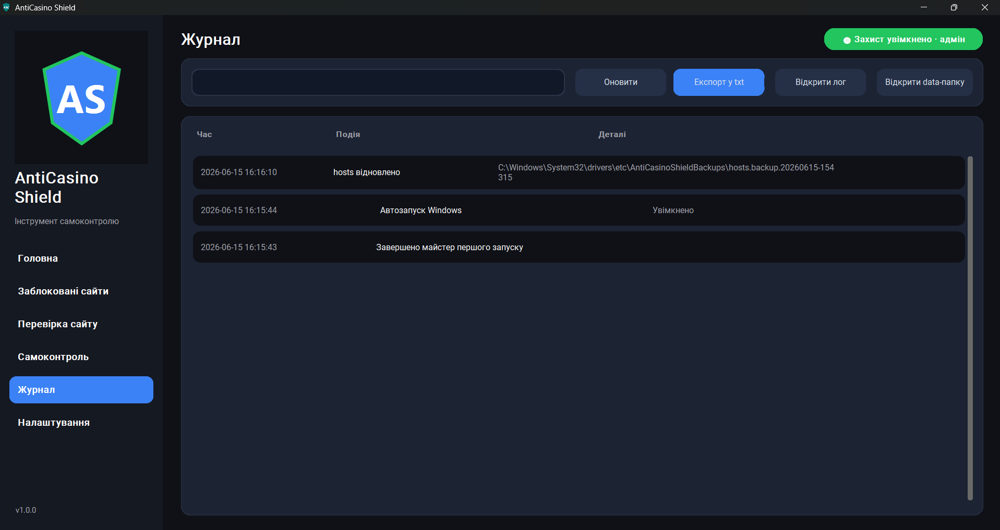
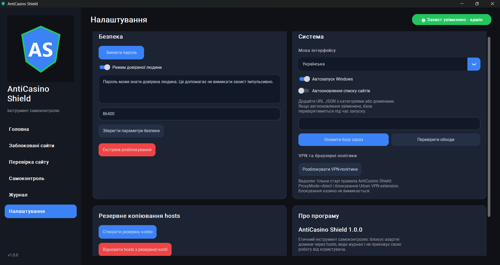

Free forever • No ads • Built for self-control
Block gambling websites.
Take back control of your time and money.
AntiCasino Shield blocks gambling, betting and casino sites at the system level, then tracks your days without gambling and estimated money saved — so self-control has something to show for it.
Free, no account, no credit card. Windows 10/11, ~20 MB.
✓ Free to use
✓ No ads
✓ Privacy friendly
✓ Windows 10/11
Built for self-control, not surveillance.

Why AntiCasino Shield?
Built to actually work, and easy to trust
Most gambling blockers are either expensive, complicated or filled with ads.
AntiCasino Shield blocks at the system level, keeps everything local, and stays free — with progress you can actually see.
Features
Practical friction against gambling websites
Who is it for?
For people who want a practical extra barrier
- ✓ People who want additional self-control
- ✓ Users trying to reduce gambling temptations
- ✓ Parents who want to block gambling websites
- ✓ Anyone looking for a simple local solution
Application Preview
Preview the core screens
Real screenshots of the Windows app show the main AntiCasino Shield workflow.






How it works
Simple setup, visible control
- Install AntiCasino Shield
- Enable protection
- Add custom websites if needed
- Stay focused and track progress
Built for self-control
AntiCasino Shield is not a cure, but a practical tool that adds friction between you and gambling websites. It is designed to support healthier digital habits.
Trust & Security
Clear boundaries, nothing hidden
AntiCasino Shield doesn't need your trust on faith — every system change is disclosed before it happens.
Download
Windows version
Current version: 1.1.1
Compact installer, no bundled toolbars or extra software.
Always download AntiCasino Shield from the official project page or GitHub Releases.
🛒 Microsoft Store listing: in progress. Until then, download directly below.
Support
Support Development
AntiCasino Shield is an independent project.
Every donation helps maintain blocklists, improve protection and develop new features.
The free version will always remain available.
Roadmap
What comes next
FAQ
Questions before installing
Is AntiCasino Shield free?
Yes. Core blocking is free, and support is voluntary.
Does it collect my data?
No. The app works locally and does not send browser history or personal data to a server.
Why does Windows SmartScreen show a warning?
AntiCasino Shield is a new application and may not yet have a digital code signature. Always download it from the official project page.
Why can Defender show a warning?
New unsigned Windows applications may trigger extra caution from Defender or SmartScreen. This does not automatically mean the file is unsafe, but you should only download it from the official project page or GitHub Releases.
Can I uninstall AntiCasino Shield?
Yes. You can remove the application and restore the hosts file at any time.
Does it block every gambling website?
No blocker can guarantee 100% coverage. You can add your own websites to the custom blocklist.
Can I add my own websites?
Yes. Use the custom blocklist inside the app.
Is this a medical treatment?
AntiCasino Shield is not medical or psychological treatment. If gambling is seriously affecting your life, consider contacting professional support services in your country.